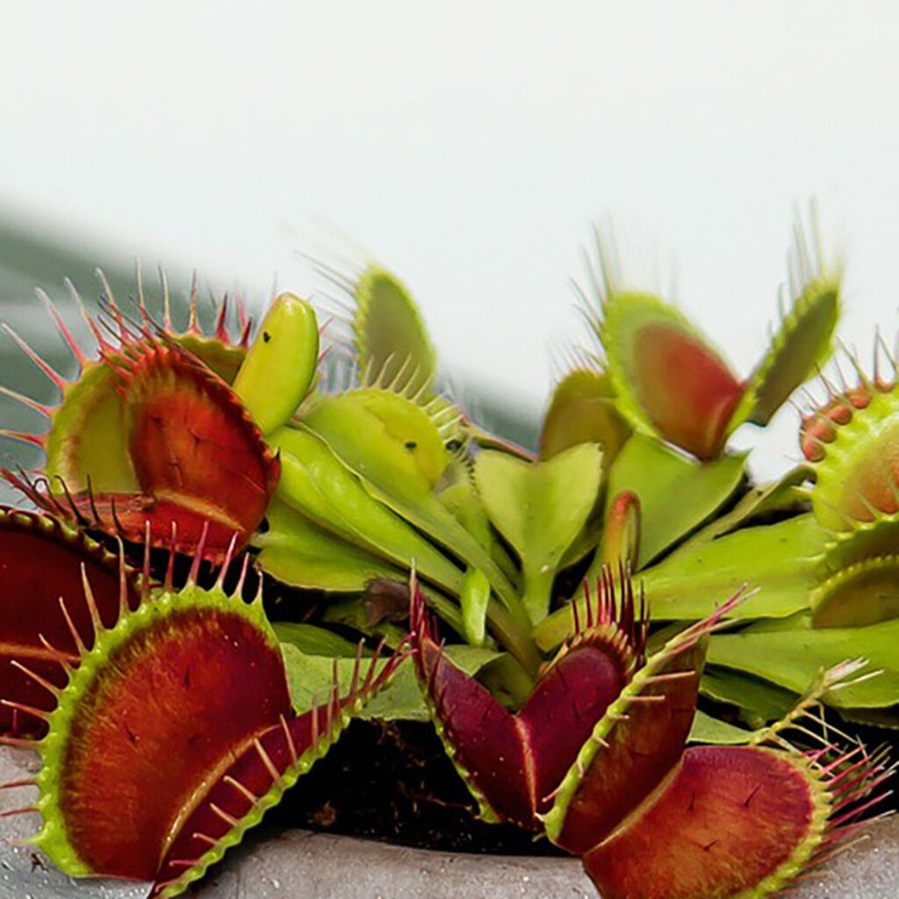

Kjøttetende plante (Venus fluefelle)
 Venusfluefanger,
eller fluefanger, insektetende plante i soldoggfamilien. Bladene har vinget
stilk og liten, rund bladplate.
Langs bladkanten sitter en rekke lange pigger, og inne på bladplaten seks små,
meget pirrelige børster. Når disse børstene berøres, klapper bladplatens to
halvdeler sammen, og de lange piggene slutter sammen som fingrene på foldete hender.
Insekter og andre smådyr som setter seg på bladet, blir på denne måten fanget,
oppløst av en utskilt væske og fordøyd av planten. Vokser i sumpstrøk i
North Carolina, hvor den ble oppdaget 1768. Dyrkes en del som stueplante.
Paris

Paris
er hovedstad i Frankrike og i regionen Île-de-France.
Byen ligger i den nordlige delen av Frankrike ved Seinen like nedenfor
munningen av Marne. Paris er den eneste kommunen i Frankrike som også
utgjør et eget departement. Bykommunen har 2 187 526 innbyggere (2017),
mens tettstedet Paris (Unité urbaine de Paris) har 10 706 072 innbyggere
(2015). Storbyområdet (Aire urbaine de Paris) har 12 532 901 innbyggere (2015),
s og er blant de største storbyområdene i Europa.
Tommy
Hei! Jeg heter Tommy, og er en elev som går på Kirkeparken videregående skole. Jeg har lyst til å bli en spillutvikler, så jeg pleier ofte å analysere spill jeg spiller. Jeg bodde i Oslo til jeg var 9 år, før jeg flyttet til en barneinstutisjon. Nå bor jeg hos to fantastiske fosterforeldre, Bjørn og Cathrine.